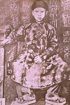

Thành Thái III
CÂU NÓI ĐÙA TAI HẠI Trong Đại Nội, nhà vua thường xem tuồng ở Duyệt Thị Đường. Chính Thành Thái là một tay đánh trống tuồng giỏi và ưa diễn tuồng. Nhà vua đã từng đóng vai Thạch Giải Trại trong vở Xảo Tống.
Có lần nghe đồn có một tay đánh trống tuồng cừ khôi nhà vua triệu ngay vào cung, bảo
biểu diễn cho vua xem. sau khi nghe xong, vua ban thưởng ngay và thú nhận với đình thần là tài năng tên này hơn cả mình. Sau đó, nhà vua vỗ tvai người đánh trống nói đùa:
- Ta phục tài đánh trống của ngươi lắm, ta thường cho ba lạng bạc. Nhưng có một điều người cần sửa là trong khi đánh trống, nhà ngươi có tật lúc lắc cái đầu trông xấu lắm. sau thánh sáu, ngươi trở lại đây biểu diễn, nếu lúc đó cái đầu nhà ngươi vẫn còn lúc lắc, thì ta mượn nó đấy.
Kể từ đó, ngày nào tay trống ấy cũng luyện tập, nhưng tật lúc lắc đầu vẫn không bỏ được. Anh ta quá lo sợ nên nhuốm bệnh nặng rồi chết.
Nghe tin ấy, vua Thành Thái rất thương tiếc một tài năng nghệ thuật và hồi hận vì câu nói vô tình của mình. Nhà vua liền lệnh cho bộ Lễ ban phát cho gia đình người đánhtrống một số tiền bạc lớn để tống táng người chết và mưu sinh cho người thân còn
sống.
( Theo Hoàng Trọng Thược )

ĐÒAN NỮ BINH TRONG ĐI NỘI
Ngấm ngầm chống Pháp, vua Thành thái huấn luyện một đoàn lính nhưng toàn là nữ. Chẳng hiểu đoàn nữ binh này tài giỏi hơn nam binh ở điểm nào, nhưng có lẽ vua Thành Thái muốn che dấu việc huấn luyện quân ssự của mình nên mới có sáng kiến trên.
Nhà vua tự bỏ tiền ra để tuyển mộ nữ binh cho ăn mặc áo quần theo kiểu riêng, hằng ngày chăm lo luyện tập quân sự một cách bí mật.
Việc tuyển mộ cũng diễn ra một cách bí mật. Nhà vua cho lính cận vệ thân tín đến tiếp xúc với họ và gia đình. Nếu được chấp thuận, vua cho " dàn cảnh " bắt cóc, bằng cách hẹn ngày giờ và địa điểm gặp gở, rồi lính cận vệ, hoặc chính nhà vua đem xe song mã đến đón họ và đưa vào cung cấm. Một đội nữ binh gồm 50 người. Sau khi luyện tập quân sự đã thành thục, 50 nữ binhấy được giao trả về gia đình, đợi khi cần thì nhập ngũ chống Pháp, sau đó tuyển thêm 50 nữ binh mới.
Để bảo mật, các cô gái bị " bắt cóc" thường được đưa vào Tử Cấm Thành bằng cửa Hữu của Thành Nội, gần làng Kim Long, vì con đường chạy dọc theo bên ngoài Hoàng Thành dẫn đến cửa Hữu rất vắng vẻ vào ban đêm, hai bên đường lại không có nhà cửa của dân chúng. Cũng vì vậy mà các cô gái ở làng này được tuyển mộ ưu tiên nhiều n hơn cả.
Lý do thứ hai là các cô gái làng An Ninh ( giáp Kim Long ) được tuyển hầu hết là thợ dệt vải ( vải An Ninh rất nổi tiếng ) nên vua Thành thái cho tổ chức ở Đại Nội các chợ bán vải do các nữ binh ấy dệt trong Đại Nội. Như vậy một mặt dễ dàng lừa thực dân, mặt khác để cho nữ binh của vua có công việc mà trang trải chi phí
Nhưng việc làm của vua lâu ngày cũng bị mộ, do Thượng Thư bộ Lại Trương Như Cương cầm đầu Viện Cơ Mật theo dõi sát, mách lại với Khâm Sứ Pháp nhằm lật đổ vua Thành thái để đưa con rể mình là Bửu Đảo ( Khải Định sau này ) lên làm vua.

Vua Thành Thái